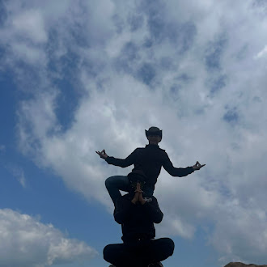

Welcome Home
My name is Bilog, and I am a student dedicated to mastering the art of Web Development.This midterm project reflects my journey in understanding how HTML provides the skeleton of a site while CSS provides the visual soul. In this section,I've applied a slate blue-gray accent to sysbolize stability and charity in design,ensuring everything fits on one page.